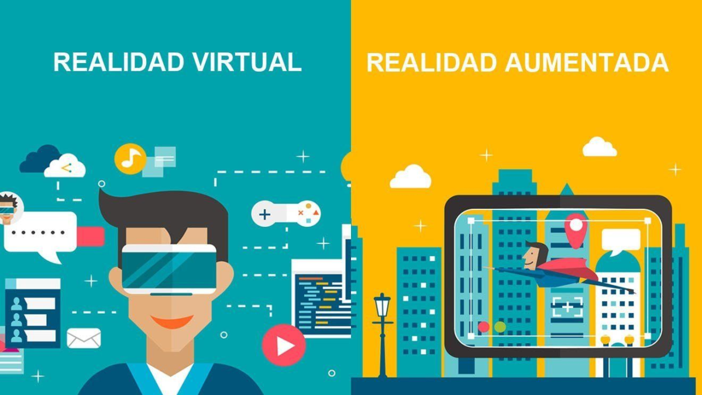

Estas tecnologías están redefiniendo la manera en que interactuamos con los contenidos digitales:
- Realidad Virtual (RV): Crea mundos completamente inmersivos que permiten a los usuarios experimentar espacios, historias o juegos como si estuvieran dentro de ellos. Es ampliamente utilizada en el diseño de videojuegos, formación profesional, turismo virtual, e incluso arte interactivo.
- Realidad Aumentada (RA): Combina elementos digitales con el mundo real, superponiendo gráficos, sonidos o información en el entorno físico del usuario (como en aplicaciones de filtros de redes sociales o Pokémon Go).
- Impacto: Tanto la RV como la RA transforman la creatividad digital al ofrecer experiencias interactivas y sensoriales, lo que lleva a una mayor conexión emocional con el usuario.
